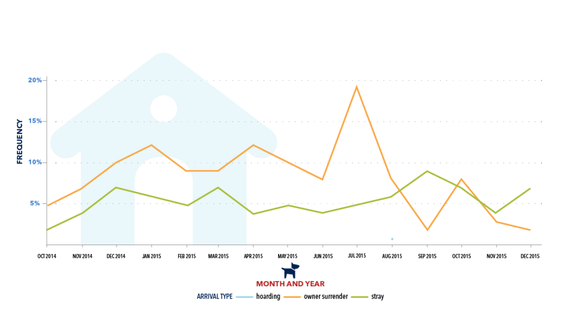

Good Example
Snake Oil Superfoods
Read CommentaryI got this visualization from informationisbeautiful.com. This is a good example of how to represent a complex dataset for many reasons. The interactivity and filtering options allow you to make comparisons easily. The axes are clearly labeled, and there is a high density of data. The visualization helps you to identify foods and the evidence that exists linking them to improving your health, or preventing certain kinds of diseases. This visualization is very useful, and could be used to support many hypotheses.
Bad Example

Read CommentaryI got this visualization from https://www.jenunderwood.com/2016/07/26/making-a-difference-with-data-animal-shelters/. Jen underwood is its author of this bad example of how to represent complex data. Apart from the watermark behind the plot, this visualization is not very dense with data. The lines are solid and it's not the most obvious where the data points are. I think this visualization might benefit if the line was used as a guide to the eye, then there was a break in the datapoint. It’s easy to make comparisons between different Arrival types, and their frequencies. However, the visualization does not reveal the actual number of animals with that arrival type that day. This comes close to being useful to support a hypothesis, but is lacking cohesion. Also, it suffers from distracting images taking away from the purpose of the visual.
Back to Analysis >>
To Hypothesis >>